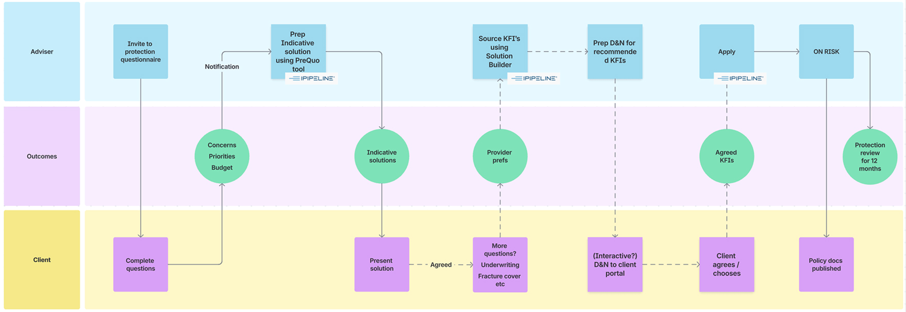
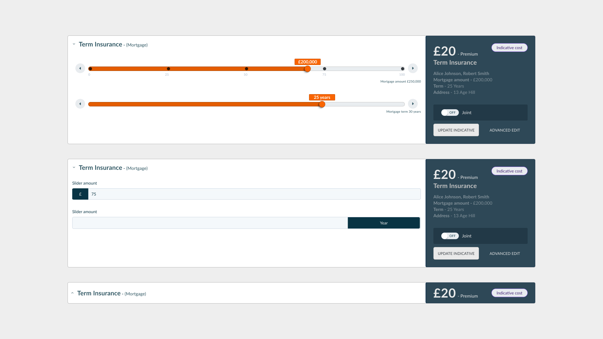
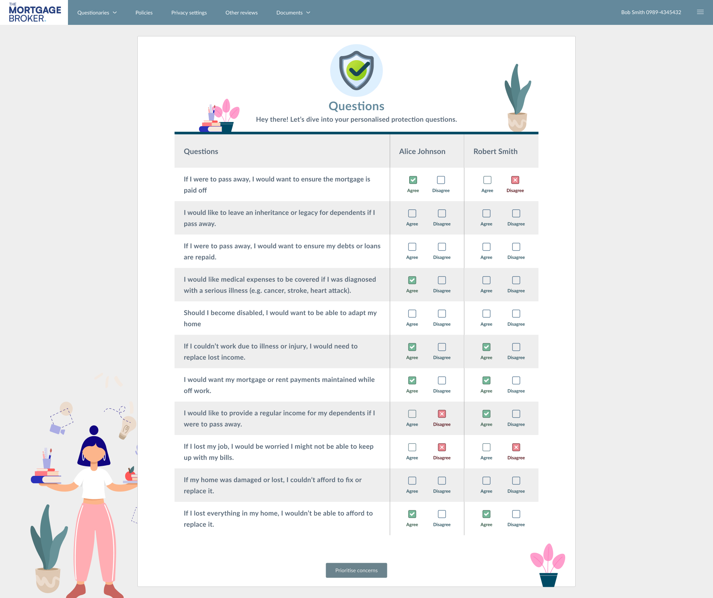
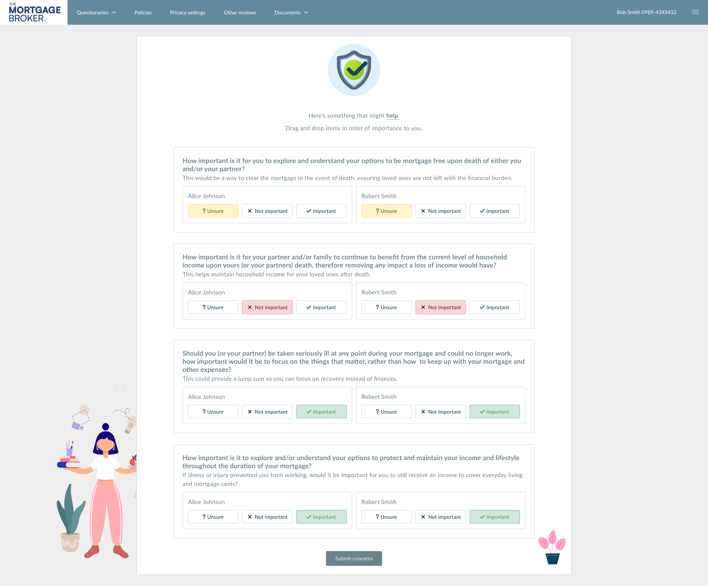

Modernising Protection
Workflows
How we stopped advisors from abandoning quotes by replacing a frustrating, manual data-entry process with a "Zero Touch" automated workflow.
The Target
132 "Zero Quoters"
Projected Impact
£109k Gross Profit
The Solution
Zero Touch API Automation
1. The "Double Keying" Problem
The biggest reason advisors weren't selling insurance? They hated typing. They had to manually enter client data into the mortgage system, and then type it all out again into the insurance system. This annoying redundancy caused 57% of potential quotes to be completely abandoned.

Initial process mapping identifying exactly where data hand-offs were failing.
The Regulatory Shift
While we were fixing the tech, the industry rules changed. We had to move the entire system from a rigid "All or Nothing" model to a flexible, budget-friendly approach.
Old Standard (2024)
"Full Cover" Mandate
Advisors were forced to quote for the full mortgage debt. This resulted in massive monthly premiums that clients immediately rejected.
New Standard (2026)
"Affordability Led"
Recommendations are now driven by what the client can actually afford. Covering a little is better than covering nothing.
2. "Zero Touch" Quotes
Typing data twice is a waste of time. I worked with the dev team to wire up an API integration. Now, the moment a mortgage application is submitted, the system grabs the data, validates it, and fires it over to our sourcing partners automatically. Boom—an instant quote is generated without a single extra keystroke from the advisor.
3. No More Reloads: The Live "Equaliser"
If a client said "that's too expensive," advisors used to have to re-submit a whole new form just to see a cheaper option. I designed an interactive "Equaliser." Now, advisors can literally drag a slider to lower the mortgage term or income cover, and watch the premium update live on screen while they have the client on the phone.
.jpg)
The "Equaliser" view allowing rapid adjustment of cover terms.

Detail: Interactive range sliders.

Detail: Dynamic quote cards that update instantly.
4. Transparency First: The Budget Slider
Why build a quote the client can't afford? We flipped the script. By introducing a "Budget First" approach, advisors ask for a monthly cap before generating anything. The system then automatically filters out unrealistic options, saving everyone time.

5. Adaptive Question Sets
Not every client needs a 50-question interrogation. We built two paths: a Comprehensive version for deep-dive compliance, and a fast-track Short version for standard cases. This lets the advisor match the flow to the actual complexity of the client.


The "Included" Confusion
Problem: During testing, advisors kept making a simple but dangerous mistake. There was a button labeled "Included." They thought clicking it meant "I want to include this." But in reality, it meant "This is already included—click to remove it." It was a classic UX mismatch.
Solution: We swapped it for a standard Toggle Switch. We separated the label ("Include in Demands & Needs") from the action (On/Off). Confusion instantly dropped to zero.
6. Taking the Guesswork out of Compliance
Instead of hoping advisors wrote the correct legal disclaimers, we built a logic matrix behind the scenes. This maps a client's natural language concern directly to the correct technical product, ensuring the final legal letter is accurate and compliant automatically.
| Client Concern | Product Output |
|---|---|
| "Ensure mortgage is paid off if I pass away." | Life Insurance |
| "Medical expenses covered for serious illness." | Critical Illness |
| "Replace lost income if I can't work." | Income Protection |
Interaction contract
Implementation notes
Equaliser + budget surfaces are HTML-first contracts: grid holds cards, range inputs own the micro-interactions, quotes reflow without remounting expensive server calls.
/* Accessible range track + thumb (conceptual) */
input[type="range"] {
accent-color: var(--color-orange);
}
.quote-grid {
display: grid;
grid-template-columns: repeat(auto-fill, minmax(220px, 1fr));
gap: 1rem;
}